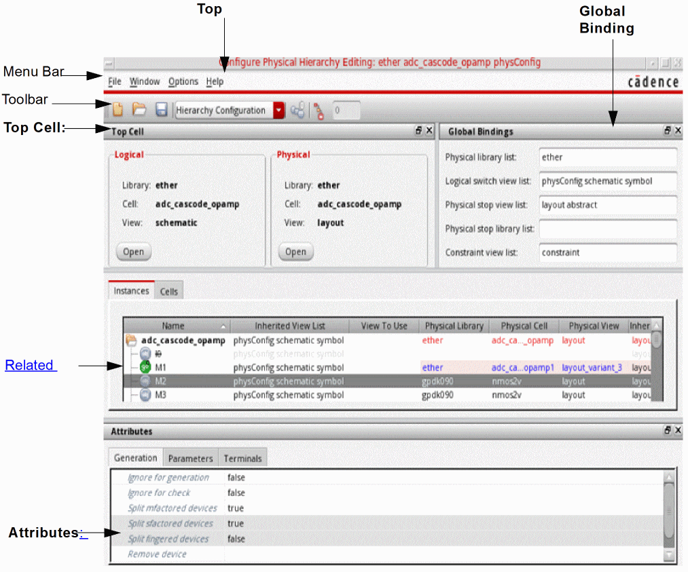
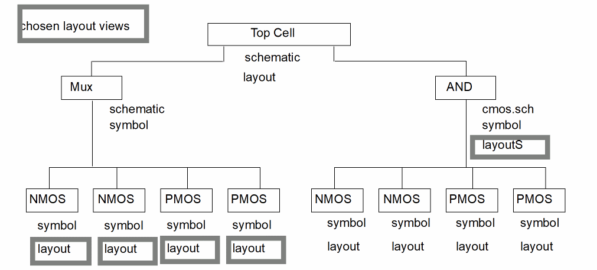

Configure Physical Hierarchy Window
The Configure Physical Hierarchy window contains a number of different elements.

-
Top Cell: The Top Cell pane displays the top-level schematic cellview and the corresponding layout cellview to be generated in the context of the current physical configuration. It is a dockable window, which you can dock on either side of the main Configure Physical Hierarchy window, or leave undocked as a floating window.
You can use the Open buttons to open (or raise, if already open) the specified views in the context of the current physical configuration view (which might be different from the configuration the schematic was using previously). If either cellview is not fully specified, this is indicated by the text<unknown>in the relevant field and the Open button is grayed out.
If there are multiple open layout views, all using the same physical configuration view, the Top Cell pane shows the layout view in the last layout window you clicked.- If there is a layout cellview specified, any changes you make in the Configure Physical Hierarchy window affect the currently active Layout XL session between the layout and schematic views listed.
-
If you open the Configure Physical Hierarchy window using the CIW’s File – Open command or using File – Open or File – New from another Configure Physical Hierarchy window, the Physical cellview is listed as
<unknown>, and the changes you make do not affect any running Layout XL session.
If the content of the top schematic cellview changes on disk, this typically invalidates the rest of the information shown in the Configure Physical Hierarchy window. To refresh the session, use the dbRefreshCellView SKILL command in the CIW. -
Global Bindings: The settings in the Global Bindings pane control how the logical design is traversed and how the logical to physical correspondence for leaf cells (stop points) is made. It is a dockable window, which you can dock on either side of the main Configure Physical Hierarchy window, or leave undocked as a floating window.
- Physical library list is the list of libraries that are searched to find the corresponding physical cell for a given logical cell. By default, the library containing the logical cell is always searched first.
- Logical switch view list specifies the view names that are used to descend into a hierarchical design to find schematic views.
- Physical stop view list specifies the view names that are used to determine the corresponding physical view for a given logical view. When traversing a hierarchy, Configure Physical Hierarchy uses the first view it encounters with one of the specified names.
- The connectivity extractor does not stop at the stop view but descends into the hierarchy until it reaches the leaf symbol. This ensures that Layout XL finds all the required pins, including global nets, which are sometimes defined on the schematic view rather than on the symbol view.
- Physical stop library list specifies the library names that contain a physical view that can be used to stop CPH from elaborating further during a hierarchical force descend.
- Constraint view list lists the names of the views containing constraint data. This list is passed to the Virtuoso Schematic Editor when it is opened in the context of a physical configuration view, allowing it to determine whether the contents of the Constraint Manager must be updated.
-
Table View: The table view lists the devices in the design in a format appropriate to the mode in which you are operating. It is not dockable.
- In Hierarchy Configuration mode you can choose between an Instances view and a Cells view. The former shows a hierarchical representation of the logical design, that is, the schematic top-level cell – and how each instance in the logical design is mapped to a layout view. The latter shows a table view of the cells in the logical design.
- In Component Types mode, the table view lists the physical cells grouped by component type. If a cell is not assigned to a particular component type, it is put in the No component type directory.
-
In Soft Block mode, the table view lists the instances in the design organized by cell type into Core, Custom, Hard Blocks, I/Os, and Soft Blocks. Instances with no physical view are also grouped together.When you select an entry in the table view, the corresponding object is cross-selected in the schematic Navigator assistant and canvas and, in turn, in the layout canvas and Navigator assistant. However, if you close the schematic view, there is no cross-selection between the Configure Physical Hierarchy Window and the layout window, because there is no active Layout XL session.
- Attributes: Lists the attributes of the component or components currently selected in the table view. The attributes and controls are different depending on the mode in which you are operating.
The following figure represents the schematic hierarchy and shows which layout views Configure Physical Hierarchy finds under the specified conditions:
-
Physical stop view list is set to
layoutlayoutS -
Logical switch view list is set to
schematic cmos.sch
The chosen layout views are shown with thick-line boxes.

-
As Configure Physical Hierarchy builds the layout, it looks at each symbol in
Top Cell. -
The
Multiplier (Mux)cell has no view with a name listed in the Physical stop view list, so Configure Physical Hierarchy goes to the Logical switch view list and switches into theMuxschematic view. -
All the devices in the
Muxschematic have a view (layout) with a name that is in the Physical stop view list, so Configure Physical Hierarchy uses that view for each device. -
The
ANDcell has a view (layoutS) with a name that is in the Physical stop view list, so Configure Physical Hierarchy uses that view for theANDdevice and never switches into thecmos.schview.
Related Topics
Return to top